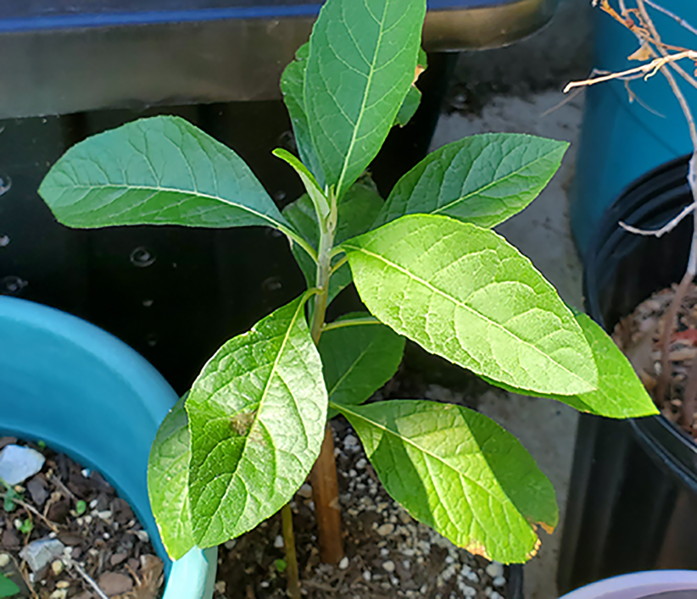
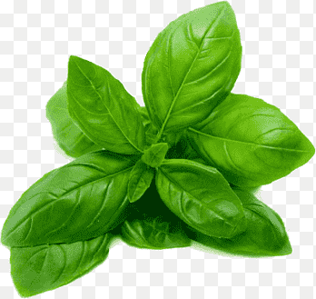
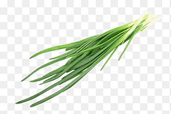

Welcome To Quinn Herbals
Table of Content
What is herb?
In botany, herb is a seed-producing annual, biennial, or perennial that does not develop persistent woody tissue but dies down at the end of a growing season
Herb is a plant whose leaves are used in cooking to add flavour to food, or as a medicine.
Categories of Herbs
Herbs are classified into various groups according to their usage,active constituent and life cycle. In this article we will be focusing on classification based on usage.
Herbs are categorized by usage as;
- Medicinal Herbs: Medicinal herbs have curative powers and are used in making medicines because of their healing properties.
- Culinary Herbs: Culinary herbs are probably the mostly used as cooking herbs because of their strong flavours like mint, parsley, basil.
- Ornamental Herbs: Ornamental herbs are used for decoration because they have brightly coloured flowers and foliage like lavender, chives.
Examples of Herbs
- Bitterleaf 
- Basil 
- Chive 
Bitter Leaf contains vitamin A, C, E, B1 and B12. It is rich in quinine, a compound which has been demonstrated to cure malaria, clean the liver, lymphatic system, and lungs.
The eugenol in basil can block calcium channels, which may help to lower blood pressure. Its essential oils can help lower your cholesterol and triglycerides. Basil also contains magnesium, which can help improve your blood flow by allowing your muscles and blood vessels to relax.
Chives contain both choline and folate. Individually, each of these components is linked to improving memory functions. Studies show that adults who eat more foods with choline in them do better on cognitive tests, while people with low levels of choline seem to be at higher risk of developing Alzheimer's.
Benefits of Herbs
The benefits of herbs include;
Herbal teas are often used as a source of relaxation or can be associated with rituals
They are used in small amounts and provide flavor rather than substance to food
They are used in small amounts and provide flavor rather than substance to food
Natural extracts from herbs such as natural oils can be used in herbal cosmetics e.g lipstick making in the middle age
Here is a video describing the benefit of some medicinal herbs. Medicinal plants